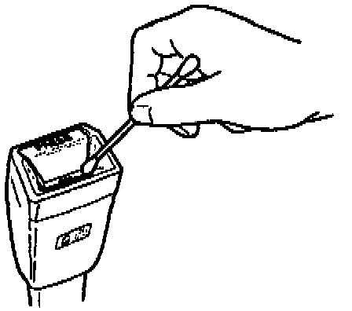
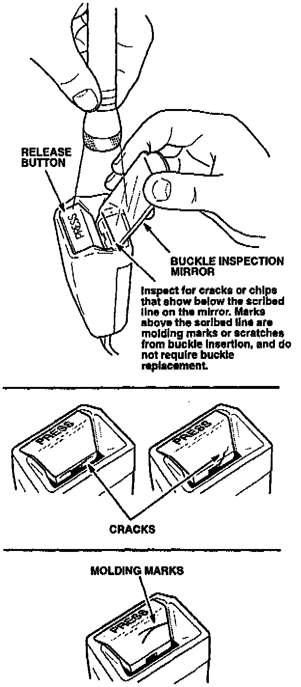

Button Inspection

1. Wet a cotton swab with a five percent soap and water solution. Clean the inside edge of the release button.

2. Using the Buckle Inspection Mirror (see TOOL INFORMATION) and a bright light, examine the release button for chips or cracks.
^ If either front buckle assembly has a chipped or cracked release button, go to Seat Belt Buckle Replacement.
^ If the front buckle assemblies are in good condition, go to Seat Belt Buckle Guide Installation.